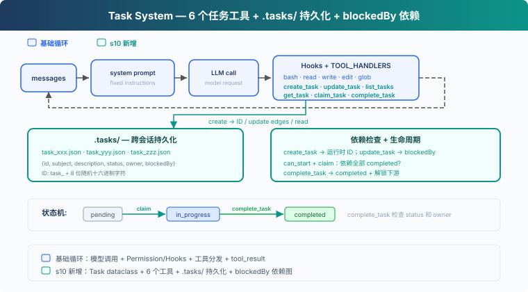
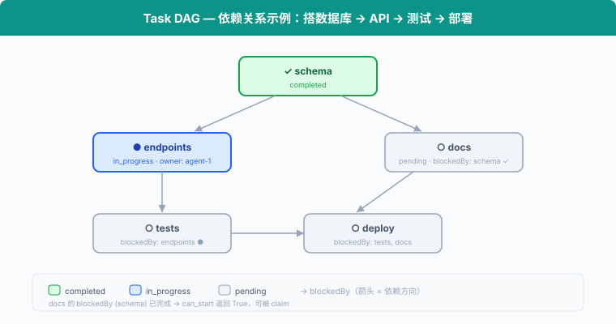

s10: Task System — 从执行清单到可协调的任务状态
s01 → ... → s08 → s09 → s10 → s11 → s12 → ... → s16 → s17
"大目标拆成小任务, 排好序, 持久化" — 文件持久化的任务图, 多 agent 协作的基础。
Harness 层: 任务 — 持久化的目标, 可恢复的进度。
问题
s05 的 TodoWrite 让 Agent 记录当前任务的执行步骤。清单中的每一项只有内容和状态，用来提醒 Agent 接下来还要做什么。
当项目被拆成创建数据库表、编写 API 和添加测试三个任务时，Harness 还需要知道它们之间的关系：数据库表完成后才能编写 API，API 接口确定后才能添加测试。每个任务还要记录由谁负责。
TodoWrite 没有记录这些依赖和分工。它可以显示“编写 API”仍未完成，但 Harness 无法据此判断这个任务是否可以开始。
本章加入 Task System。每个任务都有独立的 ID 和状态，blockedBy 记录前置任务，owner 记录负责执行的 Agent。
解决方案

代码保留 S04 的五个基础工具、Permission、Hooks 和统一 execute_tool，再加入 6 个任务工具、.tasks/ 目录持久化和 blockedBy 依赖检查。
TodoWrite vs Task System：
| TodoWrite (s05) | Task System (s10) | |
|---|---|---|
| 定位 | 当前任务的执行清单 | 可恢复的任务系统 |
| 存储 | 进程内 / 会话状态 | .tasks/{id}.json |
| 依赖 | 无 | blockedBy 依赖图 |
| 生命周期 | 当前会话 / 当前任务 | 跨会话保留 |
| 分工 | 不负责任务认领 | owner / claim |
| 状态 | pending / in_progress / completed | pending / in_progress / completed |
| 粒度 | Agent 自己的步骤 | 可被认领、追踪、解锁的任务 |
| 更新契约 | 整表替换 | 对单条记录执行创建、读取、更新、列举 |
工作原理

Task: 数据结构
每个任务是一个 JSON 文件，存于 .tasks/ 目录：
@dataclass
class Task:
id: str
subject: str
description: str
status: str # pending | in_progress | completed
owner: str | None # 负责当前任务的 Agent
blockedBy: list[str] # 依赖的任务 ID 列表
ID 使用 task_ 加 8 位随机十六进制字符生成。创建文件时使用排他写入；如果 ID 已存在，就重新生成。
TaskStore 负责校验任务 ID 和读写 JSON 文件，TASKS = TaskStore(TASKS_DIR) 是本章使用的任务存储。
create_task: 创建任务
def create_task(subject: str, description: str = "") -> Task:
return TASKS.create(subject, description)
TaskStore.create 检查 subject，分配随机 ID，再把任务写入 .tasks/{id}.json。新任务的 blockedBy 固定为空，工具结果会把运行时生成的 ID 返回给模型。
update_task: 使用返回的 ID 添加依赖
def update_task(task_id: str, addBlockedBy: list[str]) -> Task:
return TASKS.update_dependencies(task_id, addBlockedBy)
任务图采用两阶段构建：先创建所有节点，再使用 create_task 返回的 ID 调用 update_task 添加边。模型可能在一条回复里同时发出多个工具调用，而这些同级调用在任何工具结果产生前就已经确定，因此某个 create_task 无法直接使用另一个调用刚生成的 ID。
update_task 会先校验整次修改，再统一保存。目标任务和依赖必须存在，目标必须仍为 pending 且无人认领，并且不能形成自依赖或环。重复添加已有依赖是安全的，不会产生重复边。
can_start: 依赖检查
一个任务只能在它的 blockedBy 全部 completed 之后才能开始：
def can_start(task_id: str) -> bool:
return not incomplete_dependencies(load_task(task_id))
incomplete_dependencies 读取每个前置任务。只要有一个不是 completed，或者对应文件已经不存在，任务就不能认领。
claim_task: 认领任务
Agent 开始做一个任务时，调用 claim_task：设置 owner，状态从 pending → in_progress。owner 字段记录谁认领了这个任务：
def claim_task(task_id: str, owner: str = "agent") -> str:
task = load_task(task_id)
if task.status != "pending":
return f"Task {task_id} is {task.status}, cannot claim"
dependencies = incomplete_dependencies(task)
if dependencies:
return f"Blocked by: {dependencies}"
task.owner = owner
task.status = "in_progress"
TASKS.save(task)
return f"Claimed {task_id} ({task.subject})"
如果任务不是 pending，或者依赖没有完成，就拒绝认领。S10 只处理顺序执行的状态更新。
complete_task: 完成与解锁
任务做完后，设为 completed。同时扫描所有其他任务，找出刚刚被解锁的下游任务：
def complete_task(task_id: str, owner: str = "agent") -> str:
task = load_task(task_id)
if task.status != "in_progress":
return f"Task {task_id} is {task.status}, cannot complete"
if task.owner != owner:
return f"Task {task_id} is owned by {task.owner}, not {owner}"
ready_before = {t.id for t in list_tasks()
if t.status == "pending" and t.blockedBy
and can_start(t.id)}
task.status = "completed"
TASKS.save(task)
unblocked = [t.subject for t in list_tasks()
if t.status == "pending" and t.blockedBy
and t.id not in ready_before
and can_start(t.id)]
msg = f"Completed {task_id} ({task.subject})"
if unblocked:
msg += f"\nUnblocked: {', '.join(unblocked)}"
return msg
完成 "schema" 后，"endpoints" 和 "docs" 的 can_start 返回 True，它们可以开始。
get_task: 查看完整细节
list_tasks 只显示一行摘要。get_task 返回完整的任务 JSON，包括 description 和依赖细节。跨会话恢复时，Agent 需要读取完整描述才能继续工作：
def get_task(task_id: str) -> str:
task = load_task(task_id)
return json.dumps(asdict(task), indent=2)
状态机: 两个动作，三个状态
pending ──claim──→ in_progress ──complete──→ completed
这里的 claim / complete 是动作，pending / in_progress / completed 是状态：
- claim_task:
pending→in_progress。设置 owner，开始工作。 - complete_task:
in_progress→completed。把任务标记为完成，并解锁下游。
合起来跑
# 第一阶段：创建所有节点并取得运行时 ID
schema = create_task("setup database schema")
endpoints = create_task("create API endpoints")
tests = create_task("write tests")
docs = create_task("write docs")
# 第二阶段：使用返回的 ID 建立依赖边
update_task(endpoints.id, addBlockedBy=[schema.id])
update_task(tests.id, addBlockedBy=[endpoints.id])
update_task(docs.id, addBlockedBy=[schema.id])
# Agent 认领第一个可做的任务
claim_task(schema.id) # ✓ Claimed (无依赖)
complete_task(schema.id) # ✓ Completed → 解锁 endpoints, docs
claim_task(endpoints.id) # ✓ Claimed (schema 已完成)
complete_task(endpoints.id) # ✓ Completed → 解锁 tests
claim_task(docs.id) # ✓ Claimed (schema 已完成)
complete_task(docs.id) # ✓ Completed
claim_task(tests.id) # ✓ Claimed (endpoints 已完成)
complete_task(tests.id) # ✓ Completed
每个 create_task 写一个 JSON 文件，update_task、claim_task 和 complete_task 更新文件。跨会话时，.tasks/ 目录还在，Agent 读文件就能恢复进度。
试一下
cd learn-claude-code
python s10_task_system/code.py
试试这些 prompt：
Create tasks: setup database schema, create API endpoints (depends on schema), write tests (depends on endpoints), write docs (depends on schema)List all tasks and their statusesClaim the first unblocked task and complete itList tasks again — which ones are now unblocked?
观察重点：.tasks/ 目录下是否生成了 JSON 文件？完成任务后，被阻塞的任务是否解锁？
接下来
任务图有了，但全量测试、安装依赖和部署等命令可能需要很长时间。同步执行这些命令时，Agent Loop 会一直停在当前工具调用上，只有命令结束后才能继续处理其他工作。
s11 Background Tasks → 把慢操作放到后台。Agent 可以继续处理其他任务，后台执行完成后再接收通知。